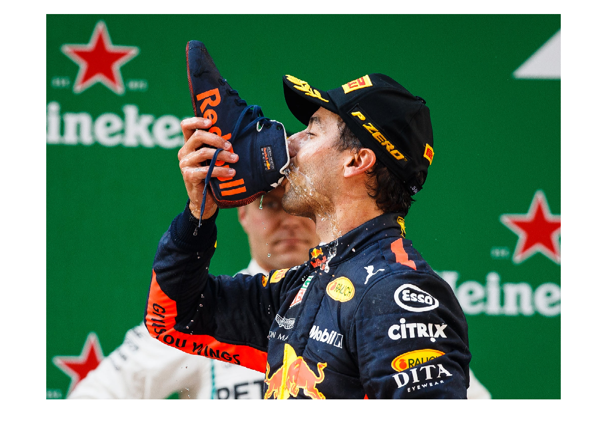
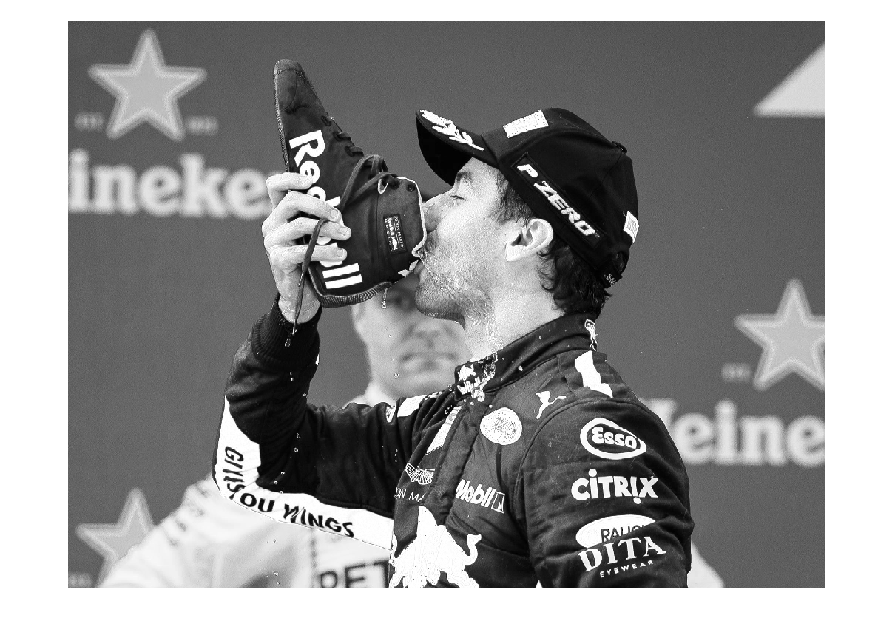
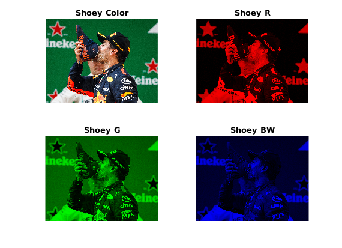
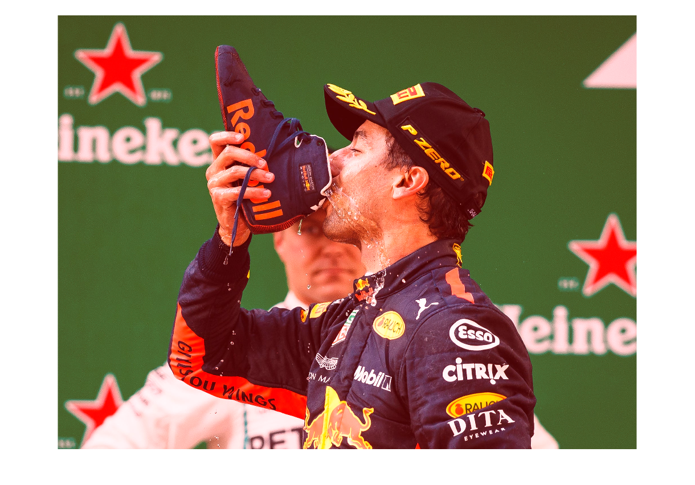
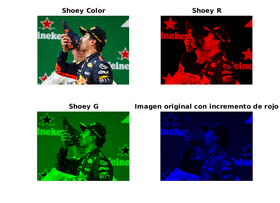
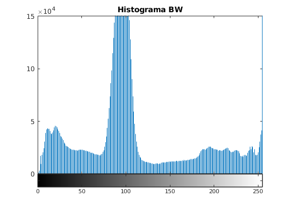
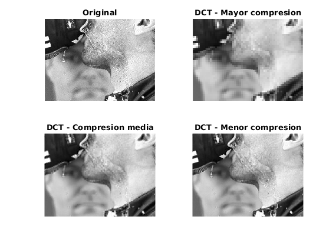
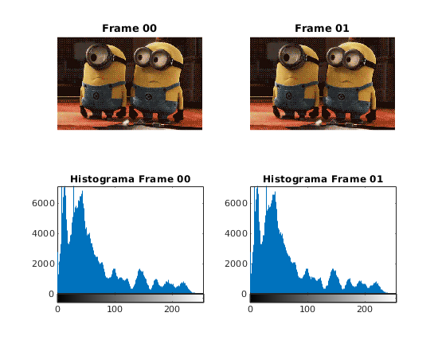
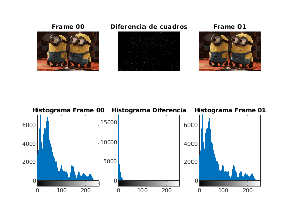

TP2 Parte 1 - Matlab
Contents
Punto a
cargo la imagen para trabajar
[img,map] = imread("/home/fran/Documents/UCA/4to año/Radiodifusión/git/Radiodifusion/TP3/res/D_avocado.jpg"); figure() title("Shoey") imshow(img)
Warning: Image is too big to fit on screen; displaying at 50%
Separo la imagen original en matrices R, G y B.
figure() subplot(221) imshow(img) title("Shoey Color") img_color = img; [m n z] = size(img); % genero una matriz R recorriendo la imagen y anulando las propiedades de G % y B en cada pixel. for i=1:m for j=1:n img(i,j,2) = 0; img(i,j,3) = 0; end end img_R = img; subplot(222); imshow(img_R); title("Shoey R") img = img_color; % genero una matriz G recorriendo la imagen y anulando las propiedades de R % y B en cada pixel. for i=1:m for j=1:n img(i,j,1) = 0; img(i,j,3) = 0; end end img_G = img; subplot(223) imshow(img_G); title("Shoey G") img = img_color; % genero una matriz B recorriendo la imagen y anulando las propiedades de G % y R en cada pixel. for i=1:m for j=1:n img(i,j,1) = 0; img(i,j,2) = 0; end end img_B = img; subplot(224) imshow(img_B); title("Shoey B") img = img_color;
Generacion de imagen en escala de grises: tomo la imagen y para cada pixel comparo sus valores de R,G y B. luego asigno un mismo valor para las 3 componentes, dando así un tono de gris. Este valor podría ser tomado como el máximo, para una imagen mas luminosa, el minimo para una imagen mas oscura o un valor medio de los tres. Particularmente tomé el valor máximo para que se obtenga una imagen con mas brillo y se aprecien mas los detalles oscuros.
for i=1:m for j=1:n if img(i,j,1)>img(i,j,2) && img(i,j,1)>img(i,j,3) img(i,j,2) = img(i,j,1); img(i,j,3) = img(i,j,1); else if img(i,j,2)>img(i,j,1) && img(i,j,2)>img(i,j,3) img(i,j,1) = img(i,j,2); img(i,j,3) = img(i,j,2); else img(i,j,1) = img(i,j,3); img(i,j,2) = img(i,j,3); end end end end img_bw = img; figure() imshow(img_bw) title("Shoey BW")
Warning: Image is too big to fit on screen; displaying at 50% 
Punto b
Amplificar la componente de rojo
img = img_color; incremento = 70; % de 0 a 255 for i=1:m for j=1:n if img(i,j,1)<(256 - incremento) img(i,j,1) = img(i,j,1) + incremento; else img(i,j,1) = 255; end end end figure() imshow(img) title("Imagen original con incremento de rojo")
Warning: Image is too big to fit on screen; displaying at 50% 
Punto c
Generamos un histograma de la imagen en escala de grises.
figure()
imhist(img_bw)
title("Histograma BW")
 Punto c
Aplico la transformada discreta coseno a bloques de 8x8 y, aplico distintas matrices de cuantización para verificar la calidad de la imagen comprimida.
for i=1:m for j=1:n IM(i,j) = img_bw(i,j,1); end end img_double = im2double(IM); TM = dctmtx(8); dct = @(block_struct) TM*block_struct.data*TM'; BP = blockproc(img_double,[8 8],dct); mask1 = [1 0 0 0 0 0 0 0 0 0 0 0 0 0 0 0 0 0 0 0 0 0 0 0 0 0 0 0 0 0 0 0 0 0 0 0 0 0 0 0 0 0 0 0 0 0 0 0 0 0 0 0 0 0 0 0 0 0 0 0 0 0 0 0]; mask2 = [1 1 0 0 0 0 0 0 1 0 0 0 0 0 0 0 0 0 0 0 0 0 0 0 0 0 0 0 0 0 0 0 0 0 0 0 0 0 0 0 0 0 0 0 0 0 0 0 0 0 0 0 0 0 0 0 0 0 0 0 0 0 0 0]; mask3 = [1 1 1 0 0 0 0 0 1 1 0 0 0 0 0 0 1 0 0 0 0 0 0 0 0 0 0 0 0 0 0 0 0 0 0 0 0 0 0 0 0 0 0 0 0 0 0 0 0 0 0 0 0 0 0 0 0 0 0 0 0 0 0 0]; B1 = blockproc(BP,[8 8],@(block_struct) mask1 .* block_struct.data); B2 = blockproc(BP,[8 8],@(block_struct) mask2 .* block_struct.data); B3 = blockproc(BP,[8 8],@(block_struct) mask3 .* block_struct.data); invdct = @(block_struct) TM' * block_struct.data * TM; I1 = blockproc(B1,[8 8],invdct); I2 = blockproc(B2,[8 8],invdct); I3 = blockproc(B3,[8 8],invdct); figure() subplot(222) imshow(I1) title("DCT - Mayor compresion") zoom(4) subplot(221) imshow(img_bw) title("Original") zoom(4) subplot(223) imshow(I2) title("DCT - Compresion media") zoom(4) subplot(224) imshow(I3) title("DCT - Menor compresion") zoom(4)
Parte 2
[minions,minions_map] = imread("/home/fran/Documents/UCA/4to año/Radiodifusión/git/Radiodifusion/TP3/res/Minions-gif-jpg/frame_00_delay-0.1s.jpg"); [minions2,minions2_map] = imread("/home/fran/Documents/UCA/4to año/Radiodifusión/git/Radiodifusion/TP3/res/Minions-gif-jpg/frame_01_delay-0.1s.jpg"); figure() subplot(221) imshow(minions) title("Frame 00") subplot(222) imshow(minions2) title("Frame 01") subplot(223) imhist(minions) title("Histograma Frame 00") subplot(224) imhist(minions2) title("Histograma Frame 01") [m n z] = size(minions); for i = 1:m for j = 1:n dif_minions(i,j) = minions2(i,j) - minions(i,j); end end figure() subplot(231) imshow(minions) title("Frame 00") subplot(233) imshow(minions2) title("Frame 01") subplot(232) imshow(dif_minions) title("Diferencia de cuadros") subplot(234) imhist(minions) title("Histograma Frame 00") subplot(236) imhist(minions2) title("Histograma Frame 01") subplot(235) imhist(dif_minions) title("Histograma Diferencia") 